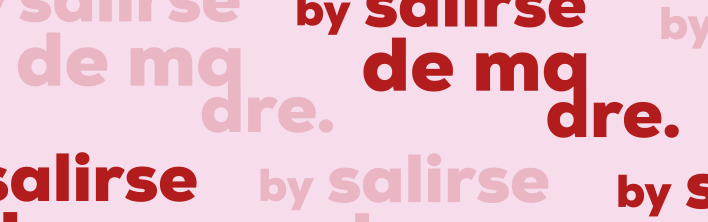
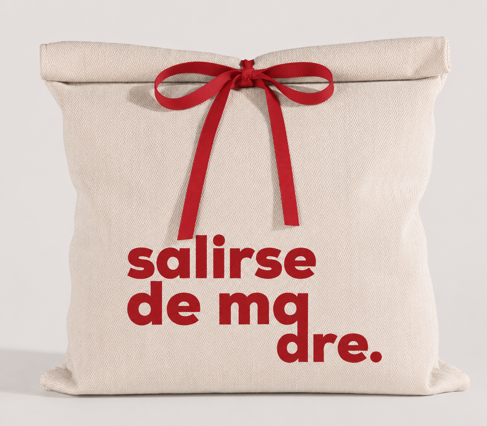
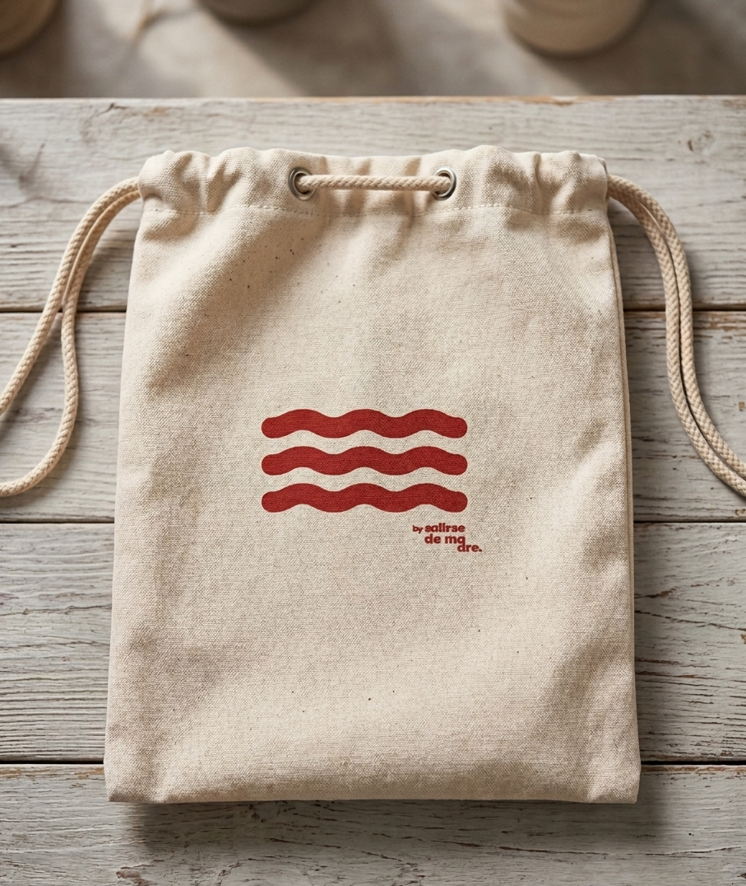
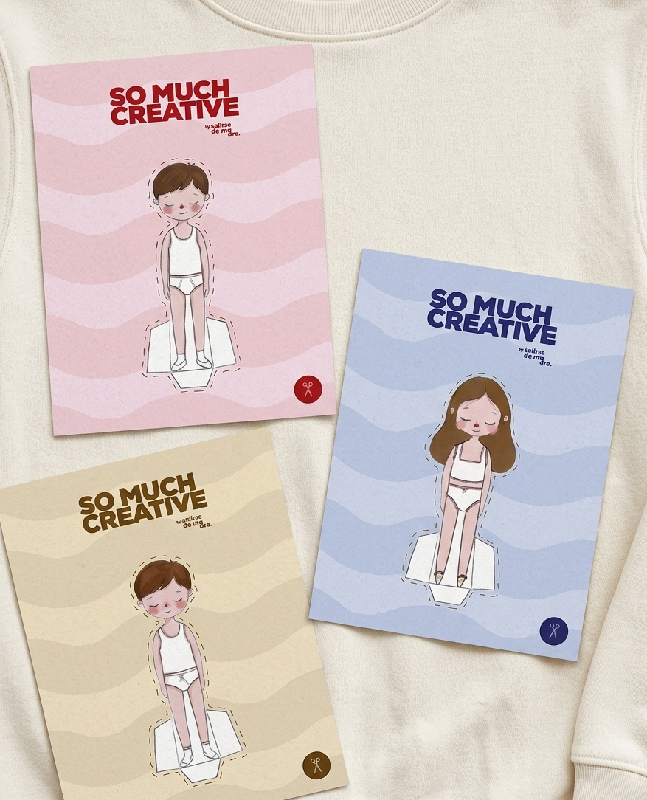
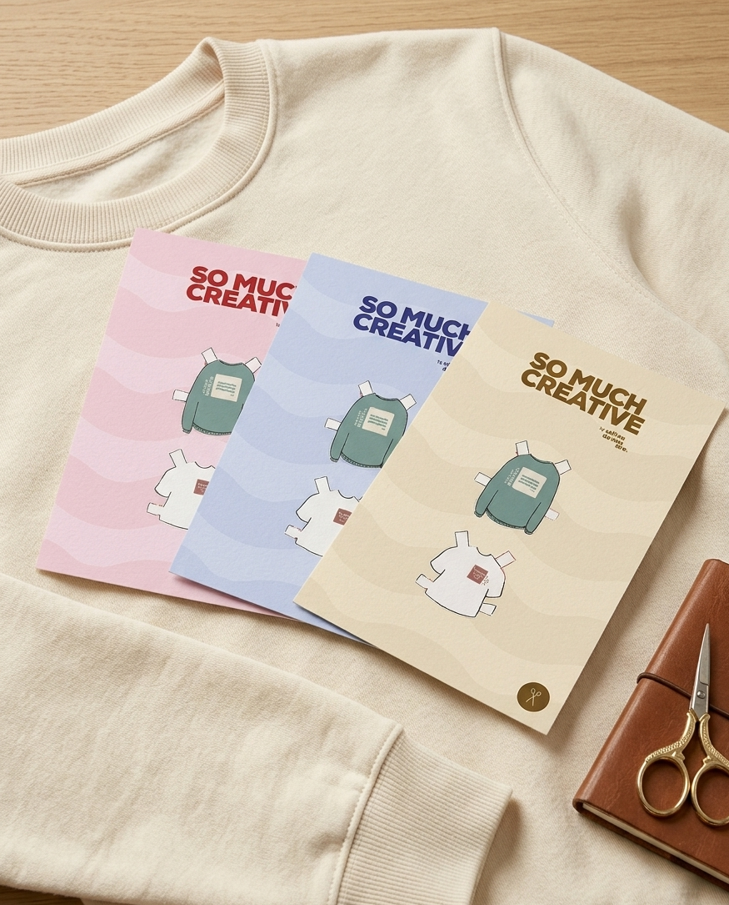

Salirse de Madre
Creación de estrategia de packaging de bajo presupuesto.
↓Proyecto en el marco del Máster en Diseño Gráfico y Desarrollo Web UX/UI de la Cámara de Comercio de Sevilla de packaging para la marca de un cliente real "Salirse de madre".




El proyecto consistió en diseñar y estructurar diferentes soportes comerciales y de identidad, como bolsas de tela y un incentivo para los más pequeños dentro del packaging. El objetivo principal fue trasladar la personalidad fresca y cercana de la marca a elementos tangibles y listos para producción, definiendo materiales y costes aproximados. Con este diseño, logré crear un conjunto de piezas gráfico-publicitarias unificado, atractivo y muy funcional para el día a día del negocio.